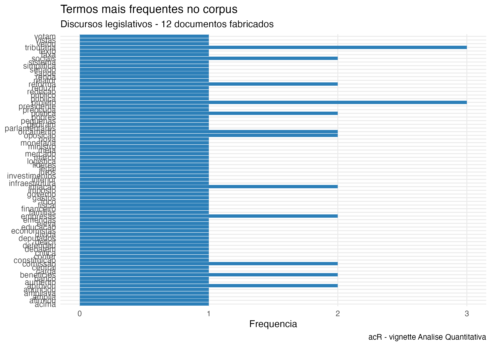
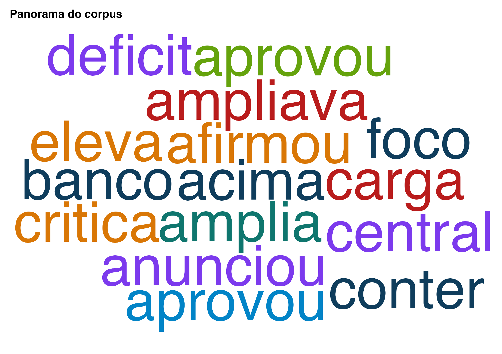
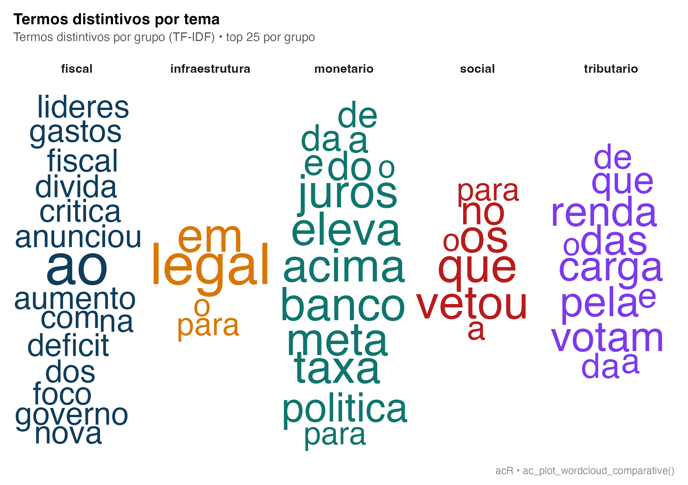
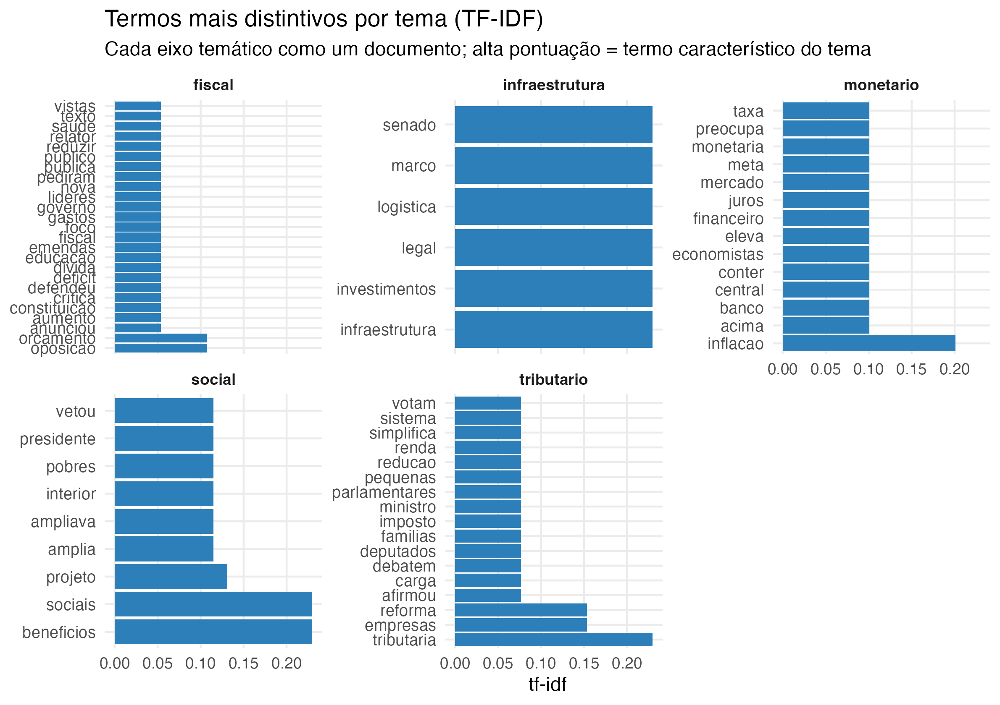
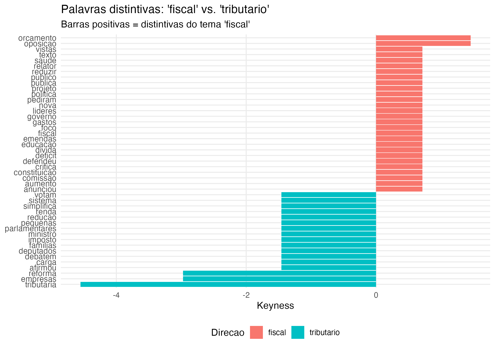
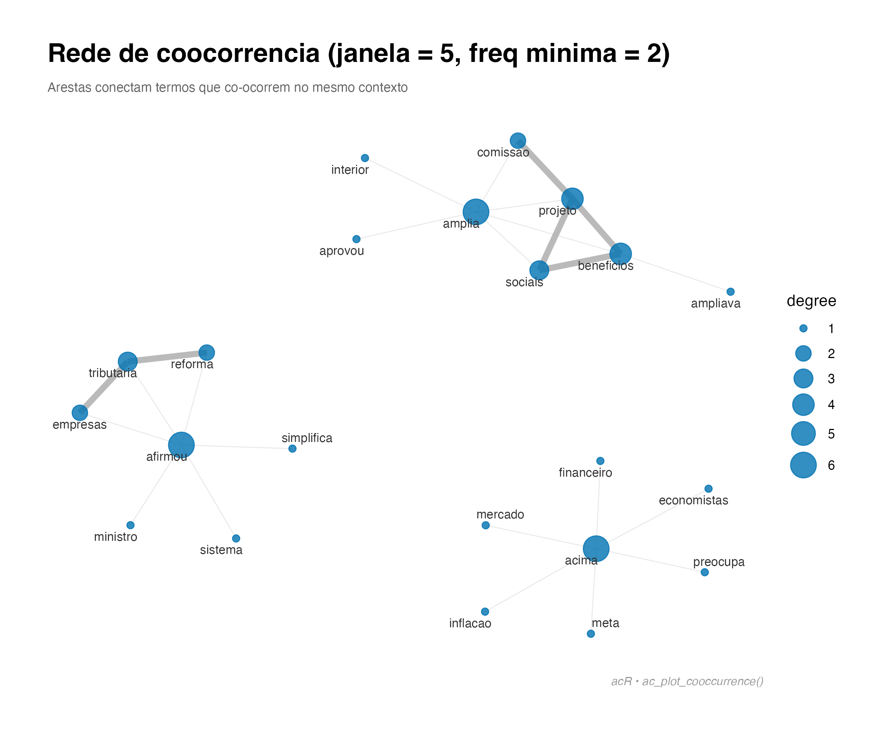
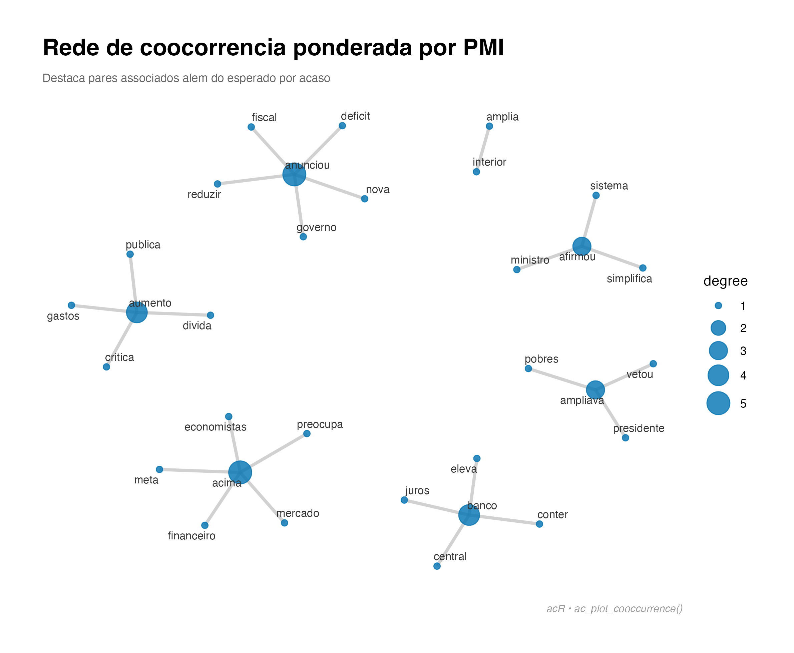
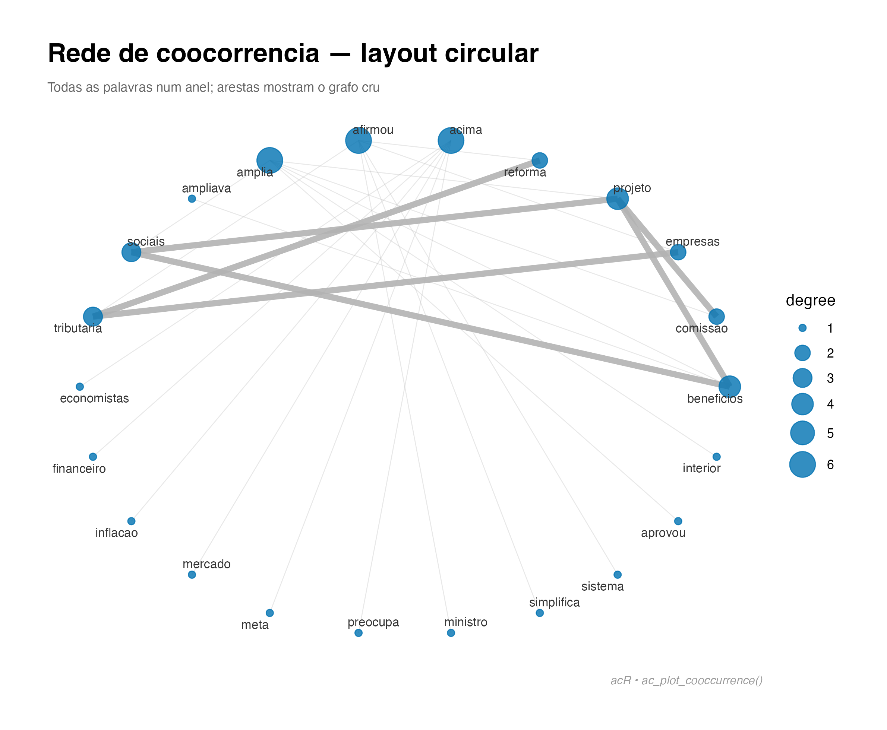

Esta vignette percorre o módulo quantitativo do
acR em cima de um corpus de discursos parlamentares
fabricado para o exemplo. Cada etapa é apresentada com uma pergunta
metodológica — por que faço isso? — antes do código e do
gráfico.
O caminho é o clássico da análise de conteúdo estatística: corpus → limpeza → tokenização → frequências → distintividade → visualização.
1. Construir o corpus
O ac_corpus() padroniza qualquer data.frame
em um objeto com colunas fixas doc_id e text,
mantendo os metadados que você quiser preservar para comparações
posteriores.
textos <- c(
"O governo anunciou nova politica fiscal para reduzir o deficit publico.",
"A oposicao critica o aumento dos gastos e da divida publica no orcamento.",
"Parlamentares debatem a reforma tributaria e o imposto de renda das familias.",
"O presidente vetou o projeto que ampliava beneficios sociais para os pobres.",
"O Senado aprovou o marco legal para investimentos em infraestrutura logistica.",
"Deputados votam pela reducao da carga tributaria para pequenas empresas.",
"A politica monetaria do Banco Central eleva a taxa de juros para conter inflacao.",
"A inflacao acima da meta preocupa economistas e o mercado financeiro.",
"O relator defendeu emendas ao texto do orcamento com foco em saude e educacao.",
"A comissao aprovou o projeto que amplia beneficios sociais no interior.",
"O ministro afirmou que a reforma tributaria simplifica o sistema para empresas.",
"Lideres da oposicao pediram vistas ao projeto na comissao de constituicao."
)
meta <- data.frame(
text = textos,
tema = c("fiscal","fiscal","tributario","social","infraestrutura",
"tributario","monetario","monetario","fiscal","social",
"tributario","fiscal"),
stringsAsFactors = FALSE
)
corpus <- ac_corpus(meta)
corpus
#>
#> ── Corpus acR ──────────────────────────────────────────────────────────────────
#> • Documentos: 12
#> • Metadados: 1 coluna
#> • Idioma: "pt"
#>
#> # A tibble: 12 × 3
#> doc_id text tema
#> <chr> <chr> <chr>
#> 1 doc_1 O governo anunciou nova politica fiscal para reduzir o deficit p… fisc…
#> 2 doc_2 A oposicao critica o aumento dos gastos e da divida publica no o… fisc…
#> 3 doc_3 Parlamentares debatem a reforma tributaria e o imposto de renda … trib…
#> 4 doc_4 O presidente vetou o projeto que ampliava beneficios sociais par… soci…
#> 5 doc_5 O Senado aprovou o marco legal para investimentos em infraestrut… infr…
#> 6 doc_6 Deputados votam pela reducao da carga tributaria para pequenas e… trib…
#> # ℹ 6 more rows2. Limpeza: por que remover stopwords?
Sem remoção de stopwords, os termos mais frequentes de
qualquer corpus em português são artigos, preposições e conjunções
(o, a, de, que,
para…). Eles carregam pouquíssima informação temática e
sufocam qualquer padrão real de vocabulário. A regra prática em análise
de conteúdo (Sampaio & Lycarião, 2021) é sempre remover
stopwords antes de contar frequências ou calcular
distintividade.
O ac_clean() aceita o parâmetro
remove_stopwords = "pt" para aplicar uma lista de
stopwords portuguesas curada. Você pode adicionar seu próprio
glossário via extra_stopwords.
corpus_limpo <- ac_clean(
corpus,
remove_stopwords = "pt",
extra_stopwords = c("pra", "pro") # opcional: coloquiais
)
corpus_limpo
#>
#> ── Corpus acR ──────────────────────────────────────────────────────────────────
#> • Documentos: 12
#> • Metadados: 1 coluna
#> • Idioma: "pt"
#>
#> # A tibble: 12 × 3
#> doc_id text tema
#> <chr> <chr> <chr>
#> 1 doc_1 governo anunciou nova politica fiscal reduzir deficit publico fisc…
#> 2 doc_2 oposicao critica aumento gastos divida publica orcamento fisc…
#> 3 doc_3 parlamentares debatem reforma tributaria imposto renda familias trib…
#> 4 doc_4 presidente vetou projeto ampliava beneficios sociais pobres soci…
#> 5 doc_5 senado aprovou marco legal investimentos infraestrutura logistica infr…
#> 6 doc_6 deputados votam reducao carga tributaria pequenas empresas trib…
#> # ℹ 6 more rows3. Tokenização
ac_tokenize() quebra cada documento em unidades de
análise. Com n = 1L são unigramas (palavras); com
n = 2L, bigramas (“reforma tributária”). Bigramas são úteis
quando você quer capturar expressões compostas que
perdem sentido tokenizadas separadamente.
tokens <- ac_tokenize(corpus_limpo, n = 1L)
head(tokens, 12)
#> # A tibble: 12 × 3
#> doc_id token_id token
#> <chr> <int> <chr>
#> 1 doc_1 1 governo
#> 2 doc_1 2 anunciou
#> 3 doc_1 3 nova
#> 4 doc_1 4 politica
#> 5 doc_1 5 fiscal
#> 6 doc_1 6 reduzir
#> 7 doc_1 7 deficit
#> 8 doc_1 8 publico
#> 9 doc_2 1 oposicao
#> 10 doc_2 2 critica
#> 11 doc_2 3 aumento
#> 12 doc_2 4 gastos4. Frequência
Contagem de ocorrências por documento e depois agregação.
ac_count() já retorna no formato tidy pronto para
pipeline com dplyr e ggplot2.
contagem <- ac_count(corpus_limpo)
contagem
#> # A tibble: 88 × 3
#> doc_id token n
#> <chr> <chr> <int>
#> 1 doc_1 anunciou 1
#> 2 doc_1 deficit 1
#> 3 doc_1 fiscal 1
#> 4 doc_1 governo 1
#> 5 doc_1 nova 1
#> 6 doc_1 politica 1
#> 7 doc_1 publico 1
#> 8 doc_1 reduzir 1
#> 9 doc_10 amplia 1
#> 10 doc_10 aprovou 1
#> # ℹ 78 more rows5. Top termos: o vocabulário do corpus
O gráfico abaixo mostra as 15 palavras mais frequentes — agora, com stopwords removidas, é possível ler os temas dominantes: reforma, projeto, tributária, orçamento, etc.
top <- ac_top_terms(contagem, n = 15)
ac_plot_top_terms(top) +
ggplot2::labs(
title = "Termos mais frequentes no corpus",
subtitle = "Discursos legislativos - 12 documentos fabricados",
caption = "acR - vignette Analise Quantitativa"
)
6. Nuvem de palavras
Uma nuvem funciona como panorama visual rápido, útil para relatórios e apresentações. Não substitui análise numérica: o tamanho da palavra é proporcional à frequência, mas a posição no plot é aleatória.
Desde a versão 0.3.1 o ac_wordcloud() prefere
automaticamente o motor ggwordcloud (retorna um
ggplot, com tipografia mais legível e layout consistente
com o tema do pacote); se ele não estiver instalado, cai para o
wordcloud clássico. Você pode forçar via
backend = "ggwordcloud" ou
backend = "wordcloud".
ac_wordcloud(contagem, max_words = 40, title = "Panorama do corpus")
#> Warning in wordcloud_boxes(data_points = points_valid_first, boxes = boxes, :
#> Some words could not fit on page. They have been removed.
6.1 Nuvem comparativa entre grupos
Quando o corpus tem uma variável de agrupamento (partido, período, tema, etc.), a nuvem comparativa mostra lado a lado os termos mais distintivos de cada grupo — pontuados por TF-IDF calculado tratando cada grupo como um “documento”. Aceita 2, 3 ou mais grupos.
# Nosso corpus tem 5 temas distintos — todos entram na comparativa:
ac_plot_wordcloud_comparative(
corpus,
group = tema,
max_words = 25,
title = "Termos distintivos por tema"
)
#> Warning in wordcloud_boxes(data_points = points_valid_first, boxes = boxes, :
#> Some words could not fit on page. They have been removed.
#> Warning in wordcloud_boxes(data_points = points_valid_first, boxes = boxes, :
#> Some words could not fit on page. They have been removed.
#> Warning in wordcloud_boxes(data_points = points_valid_first, boxes = boxes, :
#> Some words could not fit on page. They have been removed.
#> Warning in wordcloud_boxes(data_points = points_valid_first, boxes = boxes, :
#> Some words could not fit on page. They have been removed.
#> Warning in wordcloud_boxes(data_points = points_valid_first, boxes = boxes, :
#> Some words could not fit on page. They have been removed.
O layout usa ggwordcloud com facets quando disponível
(backend = "auto"), e cai em geom_text com
jitter reproduzível quando não. A semente do posicionamento é controlada
por seed = 42L. Cores vêm de ac_palette() por
padrão — uma por grupo.
7. TF-IDF: o que é distintivo em cada documento?
Frequência bruta favorece palavras que aparecem em quase todos os documentos (mesmo depois de stopwords). O TF-IDF (term frequency × inverse document frequency) penaliza termos comuns e destaca vocabulário próprio de cada grupo — útil quando o corpus é composto por textos com propostas ou temas distintos.
Com 12 discursos curtos e cada palavra aparecendo em 1–2 documentos, o TF-IDF por documento resulta em barras quase todas iguais (todo termo único vale o mesmo). O padrão fica mais legível agregando por tema: tratamos cada tema como um “documento” e o TF-IDF revela o vocabulário característico de cada eixo temático do corpus.
freq_tema <- ac_count(corpus_limpo, by = "tema")
tfidf_tema <- ac_tf_idf(freq_tema, by = "tema")
ac_plot_tf_idf(tfidf_tema, by = "tema", n = 6) +
ggplot2::labs(
title = "Termos mais distintivos por tema (TF-IDF)",
subtitle = "Cada eixo temático como um documento; alta pontuação = termo característico do tema"
)
8. Keyness: o que é distintivo entre grupos?
Enquanto TF-IDF compara documento vs. corpus, keyness compara grupos — e o critério que define o grupo é seu, não do pacote. Pode ser partido, período histórico, tema, região, autor, condição experimental, faixa etária, qualquer variável categórica no seu corpus. É a métrica clássica para a pergunta comparativa: “o que um grupo diz que o outro não diz?”.
Aqui comparamos os temas fiscal e tributário — quais palavras marcam cada lado?
freq_tema <- ac_count(corpus_limpo, by = "tema")
freq_2grupos <- freq_tema[freq_tema$tema %in% c("fiscal", "tributario"), ]
kn <- ac_keyness(freq_2grupos, group = "tema", target = "fiscal")
ac_plot_keyness(kn, n = 10) +
ggplot2::labs(
title = "Palavras distintivas: 'fiscal' vs. 'tributario'",
subtitle = "Barras positivas = distintivas do tema 'fiscal'"
)
Interpretação: chi-quadrado alto indica sobre-representação estatística. Termos como deficit e orçamento marcam o eixo fiscal; carga e renda o tributário — resultado consistente com o corpus de exemplo.
9. Rede de co-ocorrência
Palavras que aparecem próximas com frequência formam agrupamentos semânticos. A rede de coocorrência mostra essas vizinhanças com base numa janela de tokens (aqui, 5 palavras à esquerda e à direita).
Útil para: identificar frames, mapear associações conceituais e encontrar combinações de palavras que definem sub-temas dentro do corpus.
cooc <- ac_cooccurrence(corpus_limpo, window = 5L, min_count = 2L)
if (requireNamespace("ggraph", quietly = TRUE)) {
ac_plot_cooccurrence(cooc, top_n = 25) +
ggplot2::labs(
title = "Rede de coocorrencia (janela = 5, freq minima = 2)",
subtitle = "Arestas conectam termos que co-ocorrem no mesmo contexto"
)
}
9.1 Trocando o peso: PMI em vez de contagem
A rede padrão pondera arestas pela contagem de coocorrências — termos frequentes tendem a dominar. O PMI (pointwise mutual information) mede o quanto duas palavras aparecem juntas acima do esperado por acaso; revela pares surpreendentes, mesmo que raros.
if (requireNamespace("ggraph", quietly = TRUE)) {
ac_plot_cooccurrence(cooc, top_n = 25, weight = "pmi") +
ggplot2::labs(
title = "Rede de coocorrencia ponderada por PMI",
subtitle = "Destaca pares associados alem do esperado por acaso"
)
}
9.2 Trocando o layout
O layout controla como os nós são posicionados no plano. O padrão
"fr" (Fruchterman-Reingold) minimiza cruzamentos;
"kk" (Kamada-Kawai) respeita distâncias de grafo;
"circle" alinha tudo num anel — útil para corpora pequenos
onde a topologia importa menos que a legibilidade.
if (requireNamespace("ggraph", quietly = TRUE)) {
ac_plot_cooccurrence(cooc, top_n = 25, layout = "circle") +
ggplot2::labs(
title = "Rede de coocorrencia — layout circular",
subtitle = "Todas as palavras num anel; arestas mostram o grafo cru"
)
}
9.3 Coocorrência como matriz (heatmap)
Quando a rede fica saturada de arestas, um heatmap
das top-N palavras pode ser mais legível: linhas e colunas são termos, e
a intensidade da célula é a coocorrência. Não requer
ggraph.
top_tokens <- ac_top_terms(ac_count(corpus_limpo), n = 12)$token
cooc_mat <- cooc[cooc$word1 %in% top_tokens & cooc$word2 %in% top_tokens, ]
ggplot2::ggplot(cooc_mat,
ggplot2::aes(word1, word2, fill = cooc)) +
ggplot2::geom_tile(color = "white") +
ggplot2::scale_fill_gradient(low = "#F1F5F9", high = ac_palette(1)) +
ggplot2::labs(
title = "Matriz de coocorrencia (top 12 termos)",
subtitle = "Alternativa ao grafo quando a rede fica densa",
x = NULL, y = NULL, fill = "cooc."
) +
theme_ac() +
ggplot2::theme(
axis.text.x = ggplot2::element_text(angle = 45, hjust = 1)
)